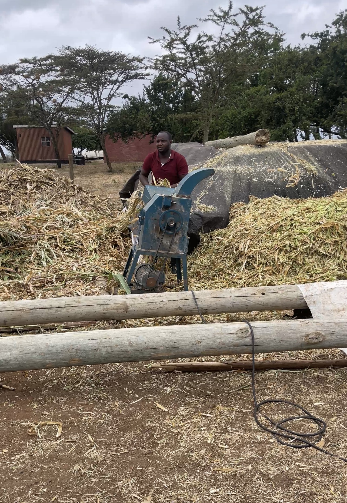
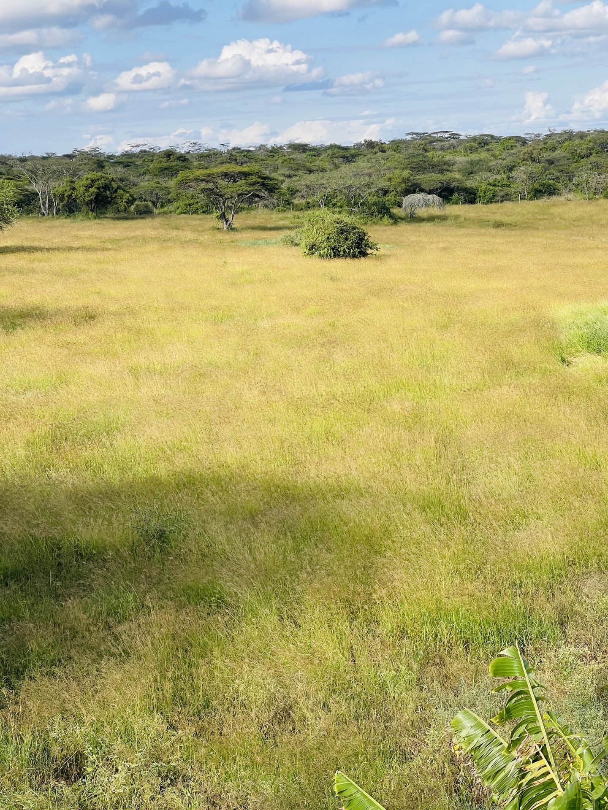
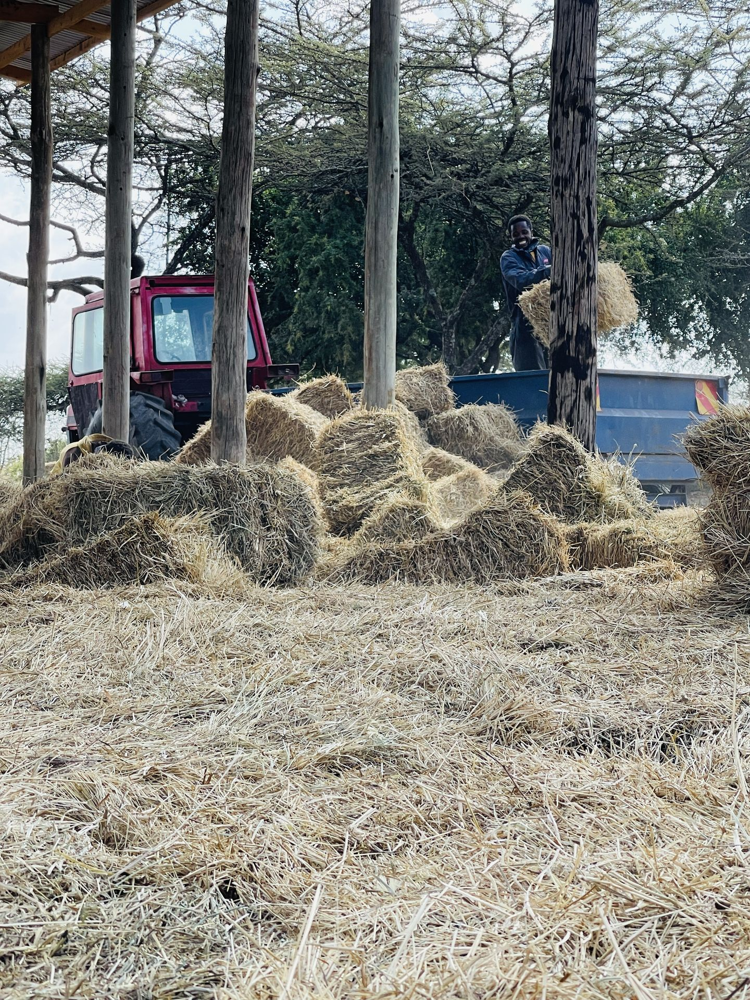
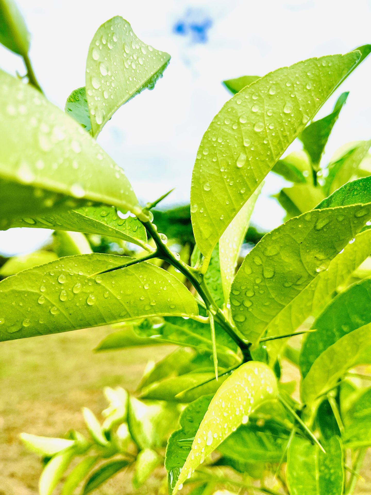
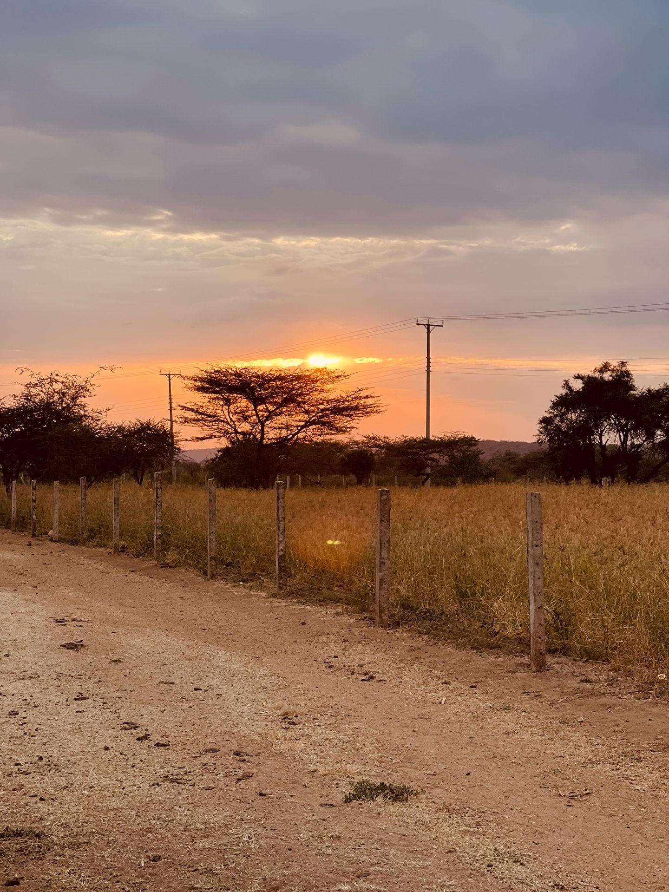
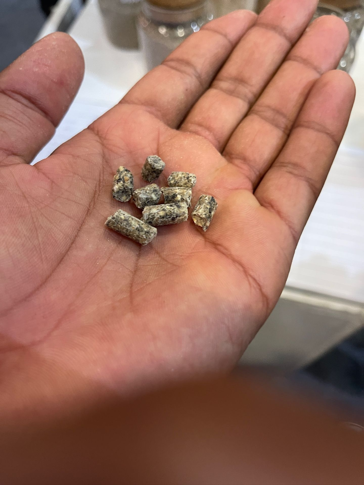
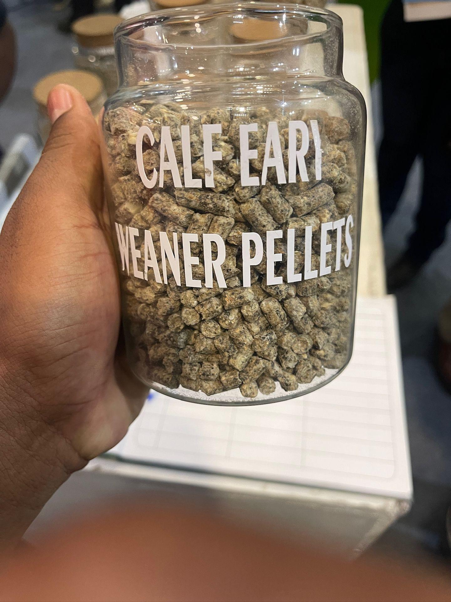
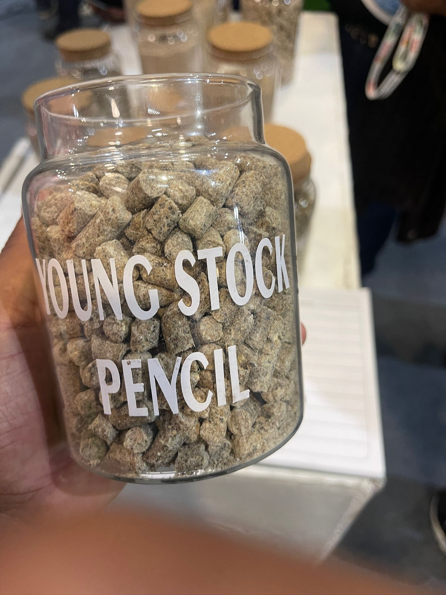
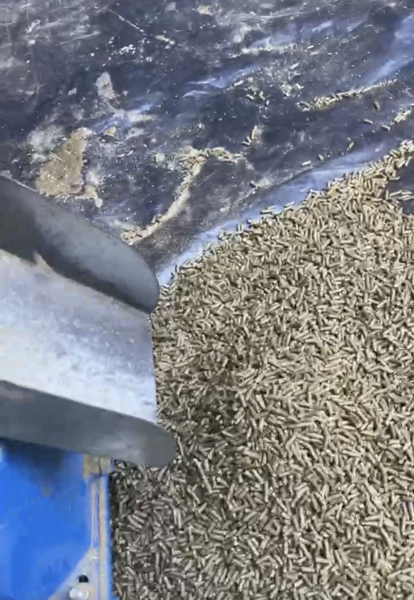

Fodder & Feeds
Premium silage, hay, fresh grass, and processed feeds — grown and made on our 40-acre farm in Kajiado.
Premium silage, hay, fresh grass, and processed feeds — grown and made on our 40-acre farm in Kajiado.
Our Fodder Operation
Rena Farm cultivates 7 different fodder varieties across 40 acres in Kajiado Central — a mix of drip-irrigated specialty crops and expansive rain-fed pastures. Every product is grown, harvested, processed, and quality-checked on-farm before reaching our animals or our customers.

Top: young yellow maize harvested at peak sugar content | Bottom: chopping and mixing silage on-farm
Our silage is a precisely formulated, high-energy fermented fodder blend. Each ingredient is harvested and prepared at its optimal stage before being mixed at controlled ratios and packed for fermentation. Stored in pit-fermented silage (recommended) or big plastic sacks.
Ideal for dairy cows, beef cattle, sheep, and goats — ensuring optimal growth, sustained milk production, and body condition all year round.
All ingredients are mixed at specific ratios before packaging for fermentation. The mixture is tightly compressed when packaging to avoid having air, since air causes decomposition. Contact us for mixture proportions.




Top left: Boma Rhodes | Top right: Hay bales | Bottom left: Natural Grass | Bottom right: Brachiaria
We produce four types of hay, all harvested at the optimal growth stage for maximum nutritional value and palatability.
Widely regarded as East Africa's finest perennial pasture grass — prized for high dry matter yield, excellent palatability, and suitability for baling. Our automatic baling machine produces consistent, tightly bound bales, and our 12-tonne lorry is available for bulk deliveries.
Dried bean stalks baled into hay — a good source of fibre and minerals, commonly used as a supplement alongside other feeds.
Harvested from natural pastures and sun-dried to produce palatable, affordable hay suitable for a wide range of livestock.
High-yielding and nutritious, Brachiaria is well-adapted to the Kajiado climate and produces quality hay bales with good palatability and dry matter content.


Left: Pakchong 1 Super Napier | Right: Jancao hybrid Napier
We grow two elite Napier varieties — Pakchong 1 and Jancao — on 4 drip-irrigated acres. Both are high-biomass, high-protein cultivars that produce multiple cuts per year, ensuring a reliable year-round supply of fresh, nutritious fodder.
A Thailand-developed super Napier variety known for exceptionally high yields, fast regrowth after cutting, and superior nutritional content. Our most productive variety per acre.
A hybrid Napier bred for outstanding biomass production and very high palatability. Animals are particularly fond of Jancao's tender stems and leafy growth.

Bracharia — thriving in Kajiado's semi-arid conditions
Bracharia is a highly productive tropical grass known for its exceptional drought tolerance and persistence in semi-arid conditions — perfectly suited to Kajiado's climate. It provides a good energy base, is very palatable, and works well for both grazing and cut-and-carry systems.
As a perennial, Bracharia requires minimal replanting once established, making it one of the most cost-effective fodder options for Kenyan smallholders.




Top: finished pellets | Bottom right: pellet making machine
Rena Farm manufactures its own livestock pellets on-site using a dedicated pellet-making machine. Our pellets are formulated from farm-grown and sourced ingredients, compressed into dense, consistent pellets for easy feeding and minimal wastage.
We produce several standard formulations including early weaner pellets for calves and young stock pencil pellets — as well as custom blends tailored to specific livestock requirements.
High-protein pellets formulated to support young calves through the weaning transition — promoting healthy rumen development and steady growth from an early age.
Balanced pencil-shaped pellets for growing young stock — designed for optimal protein, energy, and mineral intake to support healthy development and weight gain.
We can formulate pellets to specific nutritional requirements for cattle, sheep, goats, and poultry. Contact us to discuss your livestock needs.
Processed Feeds
Formulated, balanced pellets for cattle, sheep, goats, and Kienyeji poultry.
Balanced concentrate pellets for sheep, goats, and cattle. Formulated for optimal protein, energy, and mineral balance — particularly effective for feedlot fattening programs and dairy cow supplementation.
Specially formulated for Kienyeji improved poultry. Balanced for optimal growth rates, egg production, and overall bird health. Available for local poultry farmers and buyers looking for quality feed.
The Process
Every step of our fodder production is controlled on-farm — from seed and soil preparation to harvest, processing, and delivery.
The equipment that powers our fodder operation
Used for land preparation, ploughing, harrowing, and all field operations across the 40-acre farm.
Produces consistent, tightly-bound Boma Rhodes hay bales — ready for storage or direct bulk sale.
Installed across 6 acres of Napier and Lucerne — enabling reliable year-round production regardless of rainfall.
Our own delivery lorry for bulk hay and fodder orders — available for large purchases across the region.
Contact us to check current availability, pricing, and delivery options.